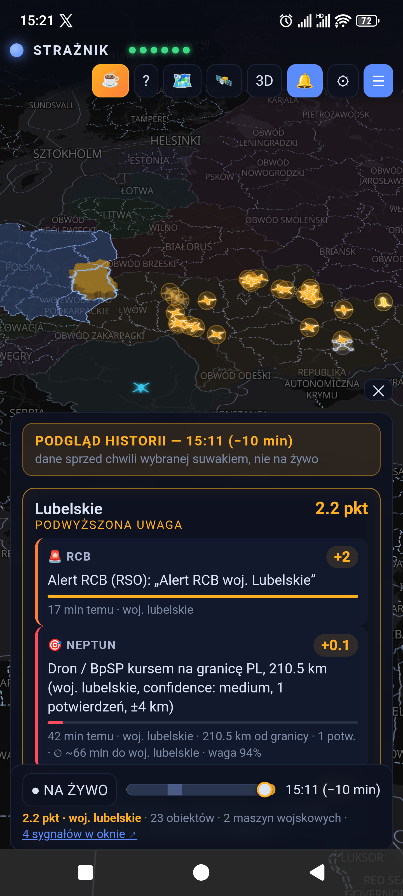

STRAŻNIK
Mapa, sygnały
i powiadomienia
o zagrożeniach powietrznych
Wiele źródeł. Czytelne przyczyny alertów.
Android + przeglądarka
Android + przeglądarka
straznik.eu
Nieoficjalne źródło dodatkowe · nie zastępuje RCB i syren

Przykład historyczny — nie bieżący alert